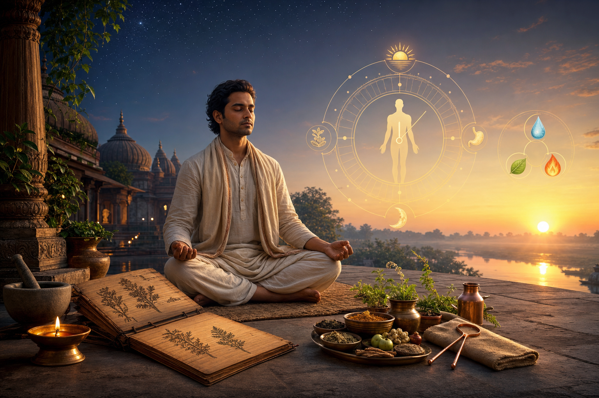

आज के डिजिटल युग में, जहाँ रात के 3 बजे तक 'डूम-स्क्रॉलिंग' करना एक आदत बन गई है, हमारी जैविक घड़ी (Biological Clock) पूरी तरह से अस्त-व्यस्त हो चुकी है। क्या आपने कभी सोचा है कि आधुनिक सुख-सुविधाओं के बावजूद तनाव और बीमारियाँ क्यों बढ़ रही हैं? इसका उत्तर महर्षि वाग्भट द्वारा रचित 'अष्टांग हृदय' में छिपा है। यह ग्रंथ केवल एक चिकित्सा पुस्तक नहीं, बल्कि हमारी आत्मा और शरीर को पुन: संतुलित करने का एक मैनुअल है।

आयुर्वेद के अनुसार, जीवन के चार पुरुषार्थों— धर्म, अर्थ, काम और मोक्ष —की प्राप्ति के लिए स्वास्थ्य ही एकमात्र आधार है। इस विद्या को सीखने के लिए 'विधेय' (अनुशासन और आज्ञाकारिता) सबसे महत्वपूर्ण गुण माना गया है। आइए, प्राचीन संहिताओं के इस 'अपूर्व वैद्य' (भगवान धन्वंतरि) को नमन करते हुए स्वास्थ्य के उन रहस्यों को समझें जो हमें राग, द्वेष और मोह जैसे मानसिक रोगों से मुक्त कर दीर्घायु प्रदान करते हैं।
ब्रह्म मुहूर्त: 'सृजक का समय' और इसका विज्ञान
अष्टांग हृदय के अनुसार, एक स्वस्थ व्यक्ति को अपनी आयु की रक्षा के लिए ब्रह्म मुहूर्त में जागना चाहिए।
- परिभाषा: सूर्योदय से लगभग 1 घंटा 36 मिनट पहले का समय (दो मुहूर्त) ब्रह्म मुहूर्त कहलाता है। व्यापक रूप से इसे रात के अंतिम प्रहर (सुबह 3:00 से 6:00 बजे) के रूप में देखा जाता है, जब वातावरण में 'वात' की प्रधानता होती है।
- वैज्ञानिक और आध्यात्मिक लाभ:
- नवजात ऑक्सीजन (Nascent Oxygen): इस समय वायुमंडल में शुद्ध ऑक्सीजन प्रचुर मात्रा में होती है, जो हीमोग्लोबिन के साथ मिलकर 'ऑक्सी-हीमोग्लोबिन' बनाती है, जिससे रोग प्रतिरोधक क्षमता और ऊर्जा का स्तर बढ़ता है।
- मेलाटोनिन और पीनियल ग्रंथि: पीनियल ग्रंथि से मेलाटोनिन हार्मोन का स्राव इस समय अधिकतम होता है, जो मन को शांत और एकाग्र बनाता है।
क्या आप जानते हैं? (विशेष पत्रकारिता अंतर्दृष्टि)
चीन के पुतियान शहर (Putian City) में किए गए वायुमंडलीय अध्ययनों से यह सिद्ध हुआ है कि रात के समय 'नोक्टर्नल ओजोन एन्हांसमेंट' (NOE) की घटना होती है। समुद्र से क्षैतिज परिवहन (Horizontal Transport) और ऊपरी वायुमंडल से ऊर्ध्वाधर परिवहन (Vertical Transport) के कारण सुबह की हवा अधिक ताजगी भरी और प्राणशक्ति से भरपूर होती है।
दिनचर्या (Dinacharya): सुबह का क्रमबद्ध अनुशासन
स्वस्थ रहने के लिए अष्टांग हृदय के दूसरे अध्याय में सुबह की गतिविधियों का एक सूक्ष्म विवरण दिया गया है:
- दंतधावन (दातुन): अर्क, वट या खदिर जैसी जड़ी-बूटियों की टहनियों का उपयोग करें। दातुन की लंबाई 12 अंगुल और मोटाई आपकी कनिष्ठा उंगली (Little Finger) के अग्रभाग के बराबर होनी चाहिए। इसके कषाय, कटु और तिक्त रस मुख की दुर्गंध को दूर करते हैं।
- सावधानी: अपच, बुखार, और गले के रोगों में दातुन वर्जित है।
- जिह्वा निर्लेखन (जीभ की सफाई): दातुन के बाद सोने, चांदी या धातु के 10 अंगुल लंबे, चिकने और नरम स्क्रैपर से जीभ साफ करें। यह बैक्टीरिया को खत्म कर स्वाद ग्रंथियों को सक्रिय करता है।
- ताम्बूल (पान): भोजन के बाद या जागने पर लौंग और कपूर युक्त पान चबाना कफ को संतुलित करता है। परंतु, रक्तपित्त (Bleeding disorders) या आंखों की लाली होने पर इसका सेवन न करें।
- अंजन और नस्य: आंखों के स्वास्थ्य के लिए प्रतिदिन 'सौवीर अंजन' लगाएं और हर पांच या आठ दिन में 'रसांजन' का प्रयोग करें। नाक में औषधीय तेल की 2 बूंदें (नस्य) मस्तिष्क और गर्दन के विकारों को रोकती हैं।
- अभ्यंग (मालिश) और व्यायाम: प्रतिदिन तेल मालिश बुढ़ापे को रोकती है। इसके बाद अपनी 'अर्ध-शक्ति' (क्षमता से आधा) तक व्यायाम करें, जो शरीर में हल्कापन और अग्नि को प्रदीप्त करता है।
त्रिदोष, अग्नि और कोष्ठ: आपका आंतरिक संतुलन
आयुर्वेद में स्वास्थ्य का अर्थ है—दोष, अग्नि और कोष्ठ का सामंजस्य।
| दोष (Dosha) | मुख्य गुण (Qualities) | शरीर में स्थान |
|---|---|---|
| वात | रूखा, हल्का, ठंडा, सूक्ष्म | नाभि के नीचे |
| पित्त | तीक्ष्ण, गर्म, तरल, विस्र (दुर्गंधयुक्त) | हृदय और नाभि के बीच |
| कफ | स्निग्ध, भारी, स्थिर, मंद | हृदय से ऊपर |
अग्नि और कोष्ठ का महत्व:
- अग्नि (Digestive Fire): वात से विषम अग्नि, पित्त से तीक्ष्ण, कफ से मंद और संतुलित दोषों से 'सम अग्नि' पैदा होती है।
- कोष्ठ (Digestive Tract): वात की प्रधानता से 'क्रूर कोष्ठ' (कठिन पाचन), पित्त से 'मृदु कोष्ठ' (संवेदनशील पाचन) और संतुलन से 'मध्यम कोष्ठ' बनता है।
आहार और छह रसों की ऊर्जा (Energy of Six Tastes)
आयुर्वेद के अनुसार, रसों का प्रभाव उनकी ऊर्जा के पदानुक्रम (Hierarchy) पर निर्भर करता है:
- ऊर्जा का क्रम: मधुर (मीठा) रस सबसे अधिक ऊर्जा प्रदान करता है, जबकि कषाय (कसैला) सबसे कम।
- दोषों पर प्रभाव:
- मधुर, अम्ल और लवण वात को शांत करते हैं।
- तिक्त, कटु और कषाय कफ को कम करते हैं।
- कषाय, तिक्त और मधुर पित्त का शमन करते हैं।
चिकित्सा चतुष्पाद: सफल उपचार के 16 कारक
किसी भी बीमारी को ठीक करने के लिए चार स्तंभों का मजबूत होना आवश्यक है, जिनमें से प्रत्येक के 4 विशिष्ट गुण होते हैं:
- भिषग (डॉक्टर): दक्ष (चतुर), शास्त्र का ज्ञाता, व्यावहारिक अनुभव (दृष्टकर्मा) और शुचि (पवित्रता)।
- द्रव्य (दवा): बहुकल्प (विभिन्न रूपों में प्रयोग योग्य), बहुगुण (अनेक गुणों वाली), संपन्न (शक्तिशाली) और योग्य।
- उपस्था (नर्स): अनुरक्त (रोगी के प्रति प्रेम), शुचि, दक्ष और बुद्धिमान।
- रोगी: आढ्य (साधन संपन्न), भिषग्वश्य (डॉक्टर की बात मानने वाला), ज्ञापक (अच्छी याददाश्त) और सत्त्ववान (धैर्यवान)।
निष्कर्ष और स्वस्थ जीवन के 5 सुनहरे नियम
अष्टांग हृदय हमें सिखाता है कि स्वास्थ्य केवल दवाओं से नहीं, बल्कि प्रकृति के साथ तालमेल बिठाने से आता है। यदि हम अनुशासन और श्रद्धा के साथ इन प्राचीन नियमों को अपनाएं, तो हम न केवल शारीरिक बल्कि मानसिक शांति भी प्राप्त कर सकते हैं।
स्वस्थ रहने के लिए 5 गैर-परक्राम्य (Non-Negotiable) नियम:
- ब्रह्म मुहूर्त का पालन: सूर्योदय से कम से कम 48 मिनट पहले उठें।
- अधारणीय वेगों का सम्मान: मूत्र, मल, छींक, प्यास और भूख जैसे शरीर के प्राकृतिक वेगों को कभी न रोकें; इन्हें रोकना ही बीमारियों की जड़ है।
- क्रमबद्ध दिनचर्या: दातुन, जिह्वा निर्लेखन और अभ्यंग को अपनी सुबह का हिस्सा बनाएं।
- कोष्ठ के अनुसार आहार: अपनी पाचन शक्ति और कोष्ठ को समझकर ही भोजन का चुनाव करें।
- सद्वृत्त (मानसिक आचरण): बड़ों का सम्मान, सत्य भाषण और क्रोध का त्याग ही असली मानसिक औषधि है।
याद रखें, "आरोग्यं परमं भाग्यं" — स्वास्थ्य ही सबसे बड़ा भाग्य है। आज से ही इस प्राचीन ज्ञान को अपने जीवन में उतारने का संकल्प लें।